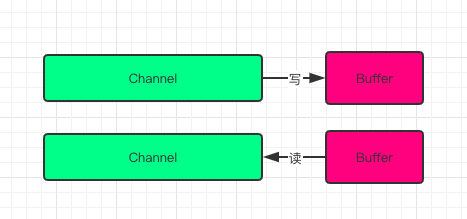
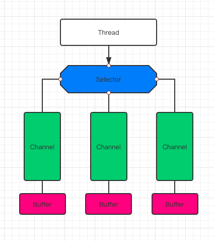
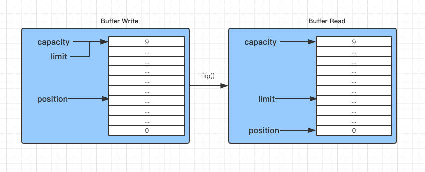

Java NIO是java 1.4之后新出的一套IO接口，这里的的新是相对于原有标准的Java IO和Java Networking接口。NIO提供了一种完全不同的操作方式。
概览
这里就不过多的去解释一些概念性的东西了,直奔主题.NIO包含下面几个核心的组件：
- Buffer
- Channel
- Selector
整个NIO体系包含的类远远不止这几个，但是在我看来Channel,Buffer和Selector组成了这个核心的API.
通道和缓冲区（Channel and Buffer）
通常来说NIO中的所有IO都是从Channel开始的。Channel和流有点类似。通过Channel，我们即可以从Channel把数据写到Buffer中，也可以把数据冲Buffer写入到Channel,如下所示:

基本的Channel实现有以下这些：
- FileChannel
- DatagramChannel
- SocketChannel
- ServerSocketChannel
核心的buffer实现有这些：
- ByteBuffer
- CharBuffer
- DoubleBuffer
- FloatBuffer
- IntBuffer
- LongBuffer
- ShortBuffer
这些Buffer涵盖了可以通过IO操作的基础类型：byte,short,int,long,float,double以及characters. NIO实际上还包含一种MappedBytesBuffer,一般用于和内存映射的文件.
选择器（Selector）
Selector运行单线程处理多个Channel，如果你的应用打开了多个通道，但每个连接的流量都很低，使用Selector就会很方便。例如在一个聊天服务器中。要使用Selector, 得向Selector注册Channel，然后调用它的select()方法。这个方法会一直阻塞到某个注册的通道有事件就绪。一旦这个方法返回，线程就可以处理这些事件，事件的例子有如新的连接进来、数据接收等。

缓冲区(Buffer)
buffer就是一块内存，你可以写入数据，并且在之后读取它。这块内存被包装成NIO buffer对象，它提供了一些方法来让你更简单地操作内存。
Buffer的基本使用
利用Buffer读写数据，通常遵循四个步骤:
- 把数据写入buffer
- 调用flip,切换读写模式
- 从Buffer中读取数据
- 调用buffer.clear()或者buffer.compact()
在写buffer的时候，buffer会跟踪写入了多少数据，需要读buffer的时候，需要调用flip()来将buffer从写模式切换成读模式，读模式中只能读取写入的数据，而非整个buffer,当数据都读完了，你需要清空buffer以供下次使用，可以有2种方法来操作:
- 调用clear()
- 调用compact()
区别：clear方法清空整个buffer，compact方法只清除你已经读取的数据，未读取的数据会被移到buffer的开头，此时写入数据会从当前数据的末尾开始.这里有一个简单的buffer案例:
public static void main(String[] args) {
IntBuffer intBuffer = IntBuffer.allocate(10);
for(int i = 0;i<intBuffer.capacity();++i){
//往buffer放数据
intBuffer.put(i*2);
}
//切换成读模式
intBuffer.flip();
while (intBuffer.hasRemaining()) {
System.out.println("buffer data : "+intBuffer.get());
}
}Buffer的容量，位置，上限（Buffer Capacity, Position and Limit）
buffer最主要的三个属性是需要我们理解的:
- 容量(Capacity):缓冲区能够容纳的数据元素的最大数量.容量在缓冲区创建时被设定,并且永远不能被改变。
- 上界(Limit):写模式中等价于buffer的大小,即capacity;读模式中为当前缓冲区中一共有多少数据,即可读的最大位置.这意味着当调用filp()方法切换成读模式时,limit的值变成position的值,而position重新指向0.
- 位置(Position):下一个要被读或写的元素的位置.初始化为0,buffer满时,position最大值为capacity-1.切换成读模式的时候,position指向0.Position会自动由相应的get()和put()函数更新。
position和limit的值在读/写模式中是不一样的,capacity的值永远表示buffer的大小。
下图解释了在读/写模式中Capacity,Position和Limit的含义:

关于 Direct Buffer 和 Non-Direct Buffer 的区别
Direct Buffer:
- 所分配的内存不在JVM堆上,不受GC的管理.(但是Direct Buffer的Java对象是由GC管理的,因此当发生GC,对象被回收时,Direct Buffer也会被释放)
- 因为Direct Buffer不在JVM堆上分配,因此Direct Buffer对应用程序的内存占用的影响就不那么明显(实际上还是占用了这么多内存,但是JVM不好统计到非JVM管理的内存.)
- 申请和释放Direct Buffer的开销比较大.因此正确的使用Direct Buffer的方式是在初始化时申请一个Buffer,然后不断复用此buffer,在程序结束后才释放此 buffer.
- 使用Direct Buffer时,当进行一些底层的系统IO操作时,效率会比较高,因为此时JVM不需要拷贝buffer中的内存到中间临时缓冲区中.
Non-Direct Buffer:
- 直接在JVM堆上进行内存的分配,本质上是byte[]数组的封装.
- 因为Non-Direct Buffer在JVM堆中,因此当进行操作系统底层IO操作中时,会将此buffer的内存复制到中间临时缓冲区中.因此Non-Direct Buffer的效率就较低.
通道(Channel)
通常来说, 所有的NIO的 I/O 操作都是从Channel开始的. 一个Channel类似于一个Stream.主要有以下几点区别：
- Channel可以读也可以写，Stream一般来说是单向的（只能读或者写）。
- Channel可以异步读写。
- Channel总是基于缓冲区Buffer来读写。
Channel 的主要类型有:
- FileChannel用于文件的数据读写.
- DatagramChannel用于UDP的数据读写。
- SocketChannel用于TCP的数据读写。
- ServerSocketChannel允许我们监听TCP链接请求，每个请求会创建会一个SocketChannel.在服务器端使用.
这有一个利用FileChannel进行文件拷贝的例子：
public static void main(String[] args) throws Exception {
String fileInStr = "fileCopy_in.txt";
String fileOutStr = "fileCopy_out.txt";
RandomAccessFile inputFile = new RandomAccessFile(fileInStr,"r");
RandomAccessFile outFile = new RandomAccessFile(fileOutStr,"rw");
long length = new File(fileInStr).length();
FileChannel inputFileChannel = inputFile.getChannel();
FileChannel outFileChannel = outFile.getChannel();
MappedByteBuffer inputData = inputFileChannel.map(FileChannel.MapMode.READ_ONLY, 0, length);
Charset charset = Charset.forName("utf-8");
CharsetDecoder charsetDecoder = charset.newDecoder();
CharsetEncoder charsetEncoder = charset.newEncoder();
CharBuffer charBuffer = charsetDecoder.decode(inputData);
ByteBuffer outByteBuffer = charsetEncoder.encode(charBuffer);
outFileChannel.write(outByteBuffer);
inputFile.close();
outFile.close();
}选择器(Selector)
Selector是Java NIO中的一个组件，用于检查一个或多个NIO Channel的状态是否处于可读、可写.如此可以实现单线程管理多个channels,也就是可以管理多个网络链接.
为什么使用Selector
用单线程处理多个channels的好处是我需要更少的线程来处理channel.实际上,你甚至可以用一个线程来处理所有的channels.从操作系统的角度来看,切换线程开销是比较昂贵的,并且每个线程都需要占用系统资源,因此暂用线程越少越好。需要留意的是,现代操作系统和CPU在多任务处理上已经变得越来越好,所以多线程带来的影响也越来越小.如果一个CPU是多核的,如果不执行多任务反而是浪费了机器的性能.不过这些设计讨论是另外的话题了。简而言之,通过Selector我们可以实现单线程操作多个channel.
创建Selector
Selector selector = Selector.open();向Selector注册通道
channel.configureBlocking(false);
SelectionKey key = channel.register(selector,Selectionkey.OP_READ);注意,如果一个Channel要注册到Selector中,那么这个Channel必须是非阻塞的,即channel.configureBlocking(false);因为Channel必须要是非阻塞的,因此FileChannel是不能够使用选择器的, 因为FileChannel都是阻塞的,注意register的第二个参数，这个参数是一个“关注集合”，代表我们关注的channel状态，有四种基础类型可供监听：
- Connect
- Accept
- Read
- Write
一个channel触发了一个事件也可视作该事件处于就绪状态.因此当channel与server连接成功后，那么就是“连接就绪”状态.server channel接收请求连接时处于“可连接就绪”状态。channel有数据可读时处于“读就绪”状态。channel可以进行数据写入时处于“写就绪”状态,上述的四种就绪状态用SelectionKey中的常量表示如下:
- SelectionKey.OP_CONNECT
- SelectionKey.OP_ACCEPT
- SelectionKey.OP_READ
- SelectionKey.OP_WRITE
如果对多个事件感兴趣可利用位的或运算结合多个常量,比如:
int interestSet = SelectionKey.OP_READ | SelectionKey.OP_WRITE; 我们利用register方法把Channel注册到了Selectors上,这个方法的返回值是SelectionKeys,这个返回的对象包含了一些比较有价值的属性:
- The interest set
- The ready set
- The Channel
- The Selector
- An attached object (optional)
Interest Set
这个“关注集合”实际上就是我们希望处理的事件的集合，它的值就是注册时传入的参数，我们可以用按为与运算把每个事件取出来:
int interestSet = selectionKey.interestOps();
boolean isInterestedInAccept = interestSet & SelectionKey.OP_ACCEPT;
boolean isInterestedInConnect = interestSet & SelectionKey.OP_CONNECT;
boolean isInterestedInRead = interestSet & SelectionKey.OP_READ;
boolean isInterestedInWrite = interestSet & SelectionKey.OP_WRITE; Ready Set
“就绪集合”中的值是当前channel处于就绪的值，一般来说在调用了select方法后都会需要用到就绪状态，select的介绍在胡须文章中继续展开。
int readySet = selectionKey.readyOps();从“就绪集合”中取值的操作类似月“关注集合”的操作,当然还有更简单的方法，SelectionKey提供了一系列返回值为boolean的的方法:
selectionKey.isAcceptable();
selectionKey.isConnectable();
selectionKey.isReadable();
selectionKey.isWritable();Channel + Selector
从SelectionKey操作Channel和Selector非常简单:
Channel channel = selectionKey.channel();
Selector selector = selectionKey.selector(); Attaching Objects
我们可以给一个SelectionKey附加一个Object，这样做一方面可以方便我们识别某个特定的channel，同时也增加了channel相关的附加信息。例如，可以把用于channel的buffer附加到SelectionKey上:
selectionKey.attach(theObject);
Object attachedObj = selectionKey.attachment();附加对象的操作也可以在register的时候就执行:
SelectionKey key = channel.register(selector, SelectionKey.OP_READ, theObject);从Selector中选择channel
一旦我们向Selector注册了一个或多个channel后，就可以调用select来获取channel.select方法会返回所有处于就绪状态的channel.select方法具体如下:
- int select()
- int select(long timeout)
- int selectNow()
select()方法在返回channel之前处于阻塞状态.select(long timeout)和select做的事一样，不过他的阻塞有一个超时限制.selectNow()不会阻塞,根据当前状态立刻返回合适的channel.select()方法的返回值是一个int整形,代表有多少channel处于就绪了.也就是自上一次select后有多少channel进入就绪.举例来说,假设第一次调用select时正好有一个channel就绪,那么返回值是1,并且对这个channel做任何处理，接着再次调用select,此时恰好又有一个新的channel就绪,那么返回值还是1,现在我们一共有两个channel处于就绪,但是在每次调用select时只有一个channel是就绪的.
selectedKeys()
在调用select并返回了有channel就绪之后，可以通过选中的key集合来获取channel，这个操作通过调用selectedKeys()方法:
Set<SelectionKey> selectedKeys = selector.selectedKeys(); 还记得在register时的操作吧，我们register后的返回值就是SelectionKey实例，也就是我们现在通过selectedKeys()方法所返回的SelectionKey.遍历这些SelectionKey可以通过如下方法:
Set<SelectionKey> selectedKeys = selector.selectedKeys();
Iterator<SelectionKey> keyIterator = selectedKeys.iterator();
while(keyIterator.hasNext()) {
SelectionKey key = keyIterator.next();
if(key.isAcceptable()) {
// a connection was accepted by a ServerSocketChannel.
} else if (key.isConnectable()) {
// a connection was established with a remote server.
} else if (key.isReadable()) {
// a channel is ready for reading
} else if (key.isWritable()) {
// a channel is ready for writing
}
keyIterator.remove();
}上述循环会迭代key集合,针对每个key我们单独判断他是处于何种就绪状态.注意keyIterater.remove()方法的调用,Selector本身并不会移除SelectionKey对象,这个操作需要我们收到执行.当下次channel处于就绪是,Selector任然会吧这些key再次加入进来.SelectionKey.channel返回的channel实例需要强转为我们实际使用的具体的channel类型,例如ServerSocketChannel或SocketChannel.
wakeUp()
由于调用select而被阻塞的线程,可以通过调用Selector.wakeup()来唤醒即便此时已然没有channel处于就绪状态.具体操作是，在另外一个线程调用wakeup,被阻塞与select方法的线程就会立刻返回。
close()
当操作Selector完毕后,需要调用close方法.close的调用会关闭Selector并使相关的SelectionKey都无效.channel本身不管被关闭.
完整的Selector案例
Server端:
public class NioServer {
private static Map<String,SocketChannel> channelMap = new HashMap();
private static Map<Integer, BiConsumer<SelectionKey,Selector>> rule = new HashMap();
public static void acceptable(SelectionKey selectionKey,Selector selector){
try {
ServerSocketChannel server = (ServerSocketChannel)selectionKey.channel();
SocketChannel client = server.accept();
client.configureBlocking(false);
client.register(selector,SelectionKey.OP_READ);
String key = "【"+ UUID.randomUUID().toString() +"】";
channelMap.put(key,client);
}catch (Exception e){
e.printStackTrace();
}
}
public static void readable(SelectionKey selectionKey,Selector selector){
try {
SocketChannel client = (SocketChannel)selectionKey.channel();
ByteBuffer byteBuffer = ByteBuffer.allocate(1024);
int count = client.read(byteBuffer);
if(count>0) {
byteBuffer.flip();
Charset charset = Charset.forName("utf-8");
String receivedMessage = String.valueOf(charset.decode(byteBuffer).array());
String clientKey = channelMap.entrySet().stream().filter(entry -> entry.getValue() == client).findFirst().
map(entry -> entry.getKey()).orElse(null);
final String clientReceivedMessage = clientKey + " : " + receivedMessage;
System.out.println(clientReceivedMessage);
//把消息广播出去
channelMap.entrySet().stream().filter(entry->!entry.getKey().equals(clientKey))
.forEach(entry->{
try {
SocketChannel otherClient = entry.getValue();
ByteBuffer writeBuffer = ByteBuffer.allocate(1024);
writeBuffer.put(clientReceivedMessage.getBytes());
writeBuffer.flip();
otherClient.write(writeBuffer);
}catch (Exception e){
e.printStackTrace();
}
});
}
}catch (Exception e){
e.printStackTrace();
}
}
public static void main(String[] args) {
rule.put(SelectionKey.OP_ACCEPT,NioServer::acceptable);
rule.put(SelectionKey.OP_READ,NioServer::readable);
try {
ServerSocketChannel serverSocketChannel = ServerSocketChannel.open();
serverSocketChannel.configureBlocking(false);
ServerSocket socket = serverSocketChannel.socket();
socket.bind(new InetSocketAddress("127.0.0.1",8899));
Selector selector = Selector.open();
serverSocketChannel.register(selector, SelectionKey.OP_ACCEPT);
while (true){
try {
selector.select();
Set<SelectionKey> selectionKeys = selector.selectedKeys();
selectionKeys.forEach(selectionKey -> {
if (selectionKey.isAcceptable()) {
rule.get(SelectionKey.OP_ACCEPT).accept(selectionKey, selector);
} else if (selectionKey.isReadable()) {
rule.get(SelectionKey.OP_READ).accept(selectionKey, selector);
}
});
selectionKeys.clear();
}catch (Exception e){
e.printStackTrace();
}
}
}catch (Exception e){
e.printStackTrace();
}
}
} Client端:
public class NioClient {
public static void main(String[] args) {
try {
SocketChannel socketChannel = SocketChannel.open();
socketChannel.configureBlocking(false);
Selector selector = Selector.open();
socketChannel.register(selector, SelectionKey.OP_CONNECT);
socketChannel.connect(new InetSocketAddress("127.0.0.1",8899));
while (true){
selector.select();
Set<SelectionKey> selectionKeys = selector.selectedKeys();
selectionKeys.forEach(selectionKey->{
try {
if (selectionKey.isConnectable()) {
SocketChannel client = (SocketChannel)selectionKey.channel();
if(client.isConnectionPending()){
client.finishConnect();
ByteBuffer writeBuffer = ByteBuffer.allocate(1024);
writeBuffer.put((LocalDateTime.now() + " 连接成功....").getBytes());
writeBuffer.flip();
client.write(writeBuffer);
ExecutorService executorService = Executors.newSingleThreadExecutor(Executors.defaultThreadFactory());
executorService.submit(()->{
while (true){
try {
writeBuffer.clear();
BufferedReader br = new BufferedReader(new InputStreamReader(System.in));
String sendMessage = br.readLine();
writeBuffer.put(sendMessage.getBytes());
writeBuffer.flip();
client.write(writeBuffer);
}catch (Exception e){
e.printStackTrace();
}
}
});
}
client.register(selector,SelectionKey.OP_READ);
}else if(selectionKey.isReadable()){
SocketChannel client = (SocketChannel)selectionKey.channel();
ByteBuffer readBuffer = ByteBuffer.allocate(1024);
int count = client.read(readBuffer);
if(count>0){
String receivedMessage = new String(readBuffer.array(),0,count);
System.out.println(receivedMessage);
}
}
}catch (Exception e){
e.printStackTrace();
}
});
selectionKeys.clear();
}
}catch (Exception e){
e.printStackTrace();
}
}
}